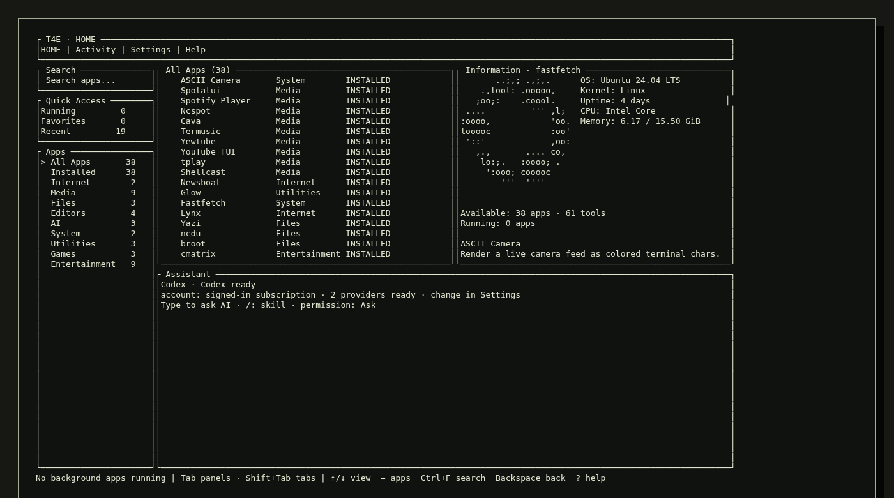

ASKREVIEW FIRST
Every proposed action opens an immediate Yes / No decision.
proposal → [Y/N] → runT4E> ABOUT --FULL-MARK
++++++-
---------==+*+==--:::::: -@@@@@@#- ::::::-----------=.
.%@@@@@@@@@@@@@@@@@@@@@@@: #@@@@@@. #@@@@@@@@@@@@@@@@@*:
=@@@@@@@@@@@@@@@@@@@@@@@+ -@@@@@@+ -@@@@@@@@@@@@@@@@@-
-==+**######*#@@@@@@%#%%- #@@@@@@ .%@@@@%##########*:
-%@@@@@* :@@@@@@* %@= =@@@@# .
-@@@@@@# *@@@@@@. +@@@ .@@@@@= ...:-==++:.
:@@@@@@% .@@@@@@* %@@@+ *@@@@@@@@@@@@@@%-
:%%%%@@% *@@@@@@: #@@@@ -@@@@@@@@@@@@@@+
-***##%# :%@@@@@* :@@@@* ==%@@#---=====.
-+==++** . +@%%%%%%#%%%@@@@@%%@#.=%@*
:=:--==+ : #%#%%%%%%@@@%%%%%@@@+:+%#= .
.=..:::- -====++++=-::#####::::+*++=+++++*******#*:.
- ..- :****- :========++++++++**- .
-. .--. .+==+= :-----------======-
-. :::. . .=--=+ ..
:-:. -=---..
: =-.
.
Find an app, inspect its boundaries, install a verified release, and run it in a managed session. Ask AI to connect the steps without handing it a raw shell.
T4E / HOME
Browse applications, read their requirements, keep sessions visible, and talk to the assistant without leaving HOME.

T4E / PROGRAMS / DEMOS
Replay a verified T4E flow. No shell commands are executed in this browser.
MULTI-APP PIPELINE
Three validated apps. One managed session.
T4E / SETTINGS / APPROVAL
AI stays inside structured catalog actions. Permission mode controls when a valid action needs your input.
Every proposed action opens an immediate Yes / No decision.
proposal → [Y/N] → runValidated actions continue automatically; high-risk gates stay visible.
validate → run → auditRequested action chains continue without approval input, still bounded by T4E schemas.
request → validate → completeAI returns bounded actions; T4E validates catalog IDs, arguments, permissions, and process lifecycle.
T4E / CATALOG
Media, files, editors, system tools, AI, and pure terminal fun—installed and launched from one HOME.
OPEN CATALOG ↗TPLAYMediaASCII video playback
TERMLEAFEditorsFocused terminal writing
YAZIFilesFast filesystem navigation
BTOPSystemLive machine metrics
FIGLET + LOLCATFunPipeline-ready output
ASCII CAMERAVisionDevice-bounded rendering
T4E / INSTALL
The first installer detects your platform and verifies the release checksum. After that, update in place with t4e update.
LINUX x86_64 · i686 · ARM64
macOS APPLE SILICON
curl -fsSL https://raw.githubusercontent.com/andy5090/tui-4-everything/main/install.sh | bash